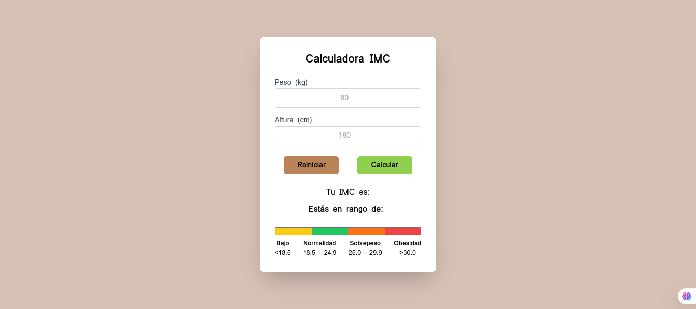

Resultados de búsqueda:
Calculadora IMC para estudiantes UDI
Calculadora de Índice de Masa Corporal diseñada para estudiantes de la Universidad UDI en Colombia. Incluye estadísticas y gráfica.
Ver en GitHub Juego de Autos en Consola (C#)
Juego de carreras para consola hecho en C# que permite competir hasta con 5 jugadores, eligiendo vehículos y pistas con potenciadores aleatorios.


Sobre mí
Programador con experiencia en frontend y backend, con gran capacidad de aprendizaje y lógica computacional. Me gusta construir cosas que funcionen bien y se vean mejor.
Mas datos sobre mi
Nombre: Angel Manuel Quintero Durán
Edad: 19 años
Intereses: Programación, videojuegos, música, y aprender cosas nuevas.
Pasatiempos: Jugar videojuegos, leer sobre tecnología, y explorar nuevas herramientas de desarrollo.
Comida favorita: Pizza 🍕
Color favorito: Azul oscuro 🌌
Datos curiosos:
- ¡Puedo escribir código mientras escucho música a todo volumen! 🎧
- Mi primer programa fue un juego de consola en C#.
- Me encanta resolver acertijos y problemas lógicos.
Mi cita favorita: "El éxito es la suma de pequeños esfuerzos repetidos día tras día."
Lema de vida: "Nunca dejes de aprender, porque la vida nunca deja de enseñar."
0 Me gusta
Comentarios: